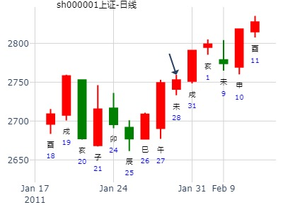
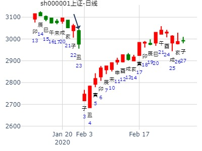
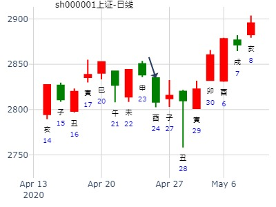
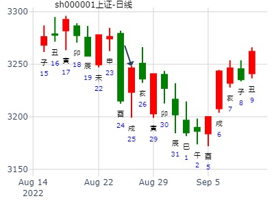

主帖标题: 元月31日-2月1日大盘涨跌卦
占事：元月31日-2月1日大盘涨跌？
公历时间：2011年1月28日16时2分 星期五
干支：庚寅年 己丑月 癸未日 庚申时 (旬空：申酉)
神煞：驿马—巳 桃花—子 日禄—子 贵人—卯，巳
震宫：雷水解 离宫：火水未济
六神 伏 神 【本 卦】 【变 卦】
白虎 ▅▅ ▅▅ 妻财庚戌土 ×→ ▅▅▅▅▅ 子孙己巳火 应
螣蛇 ▅▅ ▅▅ 官鬼庚申金 应 ▅▅ ▅▅ 妻财己未土
勾陈 ▅▅▅▅▅ 子孙庚午火 ▅▅▅▅▅ 官鬼己酉金
朱雀 ▅▅ ▅▅ 子孙戊午火 ▅▅ ▅▅ 子孙戊午火 世
青龙 ▅▅▅▅▅ 妻财戊辰土 世 ▅▅▅▅▅ 妻财戊辰土
玄武 父母庚子水 ▅▅ ▅▅ 兄弟戊寅木 ▅▅ ▅▅ 兄弟戊寅木

引用楼主金眼牛于2011-01-28 18:04发表的 元月31日-2月1日大盘涨跌卦 :
占事：元月31日-2月1日大盘涨跌？
公历时间：2011年1月28日16时2分 星期五
干支：庚寅年 己丑月 癸未日 庚申时 (旬空：申酉)
神煞：驿马—巳 桃花—子 日禄—子 贵人—卯，巳
震宫：雷水解 离宫：火水未济
六神 伏 神 【本 卦】 【变 卦】
白虎 ▅▅ ▅▅ 妻财庚戌土 ×→ ▅▅▅▅▅ 子孙己巳火 应
螣蛇 ▅▅ ▅▅ 官鬼庚申金 应 ▅▅ ▅▅ 妻财己未土
勾陈 ▅▅▅▅▅ 子孙庚午火 ▅▅▅▅▅ 官鬼己酉金
朱雀 ▅▅ ▅▅ 子孙戊午火 ▅▅ ▅▅ 子孙戊午火 世
青龙 ▅▅▅▅▅ 妻财戊辰土 世 ▅▅▅▅▅ 妻财戊辰土
玄武 父母庚子水 ▅▅ ▅▅ 兄弟戊寅木 ▅▅ ▅▅ 兄弟戊寅木
占事：中恒电气2015年走势如何？
时间: 2015-01-02 21时57分
干支: 甲午年丙子月戊寅日 (旬空: 申酉 )
雷水解 火水未济
六神 伏神 本 卦 变 卦
朱雀 ▅▅ ▅▅ 妻财戌土 Ｘ→ ▅▅▅▅▅ 子孙巳火 应
青龙 ▅▅ ▅▅ 官鬼申金 应 ▅▅ ▅▅ 妻财未土
玄武 ▅▅▅▅▅ 子孙午火 ▅▅▅▅▅ 官鬼酉金
白虎 ▅▅ ▅▅ 子孙午火 ▅▅ ▅▅ 子孙午火 世
腾蛇 ▅▅▅▅▅ 妻财辰土 世 ▅▅▅▅▅ 妻财辰土
勾陈 父母子水▅▅ ▅▅ 兄弟寅木 ▅▅ ▅▅ 兄弟寅木
上六：公用射隼，于高墉之上，获之，无不利。
解卦六爻为顶，则巳月容易见顶。戌月又容易涨。
金风科技丑月走势 红牛
公历时间：2016年1月5日23时1分
干 支：乙未年 己丑月 丁亥日 庚子时
旬 空：辰巳 午未 (午未) 辰巳
震宫：雷水解 离宫：火水未济
六神 伏 神 【本 卦】 【变 卦】
青龙 ▄▄ ▄▄ 妻财庚戌土 X-> ▄▄▄▄▄ 子孙己巳火 应
玄武 ▄▄ ▄▄ 官鬼庚申金 应 ▄▄ ▄▄ 妻财己未土
白虎 ▄▄▄▄▄ 子孙庚午火 ▄▄▄▄▄ 官鬼己酉金
螣蛇 ▄▄ ▄▄ 子孙戊午火 ▄▄ ▄▄ 子孙戊午火 世
勾陈 ▄▄▄▄▄ 妻财戊辰土 世 ▄▄▄▄▄ 妻财戊辰土
朱雀 父母庚子水 ▄▄ ▄▄ 兄弟戊寅木 ▄▄ ▄▄ 兄弟戊寅木
日辰冲散变爻，好卦作废。
主帖标题: 丑妇终须见家翁——上证指数每天预测实战
公历：2016年1月25日9时30分，星期一。
干支：乙未年 己丑月 丙午日 癸巳时 (卦身：丑)
主变卦 雷水解(震宫) 之 火水未济(离宫) [空亡:寅、卯]
青龙 ▅▅ ▅▅×妻财庚戌土 ▅▅▅▅▅ 子孙己巳火 应
玄武 ▅▅ ▅▅ 官鬼庚申金 应 ▅▅ ▅▅ 妻财己未土
白虎 ▅▅▅▅▅ 子孙庚午火 ▅▅▅▅▅ 官鬼己酉金
螣蛇 ▅▅ ▅▅ 子孙戊午火 ▅▅ ▅▅ 子孙戊午火 世
勾陈 ▅▅▅▅▅ 妻财戊辰土 世 ▅▅▅▅▅ 妻财戊辰土
朱雀 父母庚子水 ▅▅ ▅▅ 兄弟戊寅木 ▅▅ ▅▅ 兄弟戊寅木
主帖标题: 关注一2328198本周涨跌，补码8782912
15日涨跌-手摇卦
公历时间：2020年1月15日6时48分
干 支：己亥年 丁丑月 丁巳日 癸卯时
旬 空：辰巳 申酉 子丑 辰巳
震宫：雷水解 离宫：火水未济
六神 伏 神 【本 卦】 【变 卦】
青龙 ▄▄ ▄▄ 妻财庚戌土 × ▄▄▄▄▄ 子孙己巳火 应
玄武 ▄▄ ▄▄ 官鬼庚申金 应 ▄▄ ▄▄ 妻财己未土
白虎 ▄▄▄▄▄ 子孙庚午火 ▄▄▄▄▄ 官鬼己酉金
螣蛇 ▄▄ ▄▄ 子孙戊午火 ▄▄ ▄▄ 子孙戊午火 世
勾陈 ▄▄▄▄▄ 妻财戊辰土 世 ▄▄▄▄▄ 妻财戊辰土
朱雀 父母庚子水 ▄▄ ▄▄ 兄弟戊寅木 ▄▄ ▄▄ 兄弟戊寅木
此处代码不一定对，仅供参考。
主帖标题: 2020年2月大盘涨跌卦
占事：2020年2月大盘涨跌？
公历起卦时间：2020年1月23日16时18分 (手工指定)
干支：己亥年 丁丑月 乙丑日 甲申时 （日空：戌亥）
震宫：雷水解 离宫：火水未济
六神 伏神 本 卦 变 卦
玄武 妻财庚戌土 ▅▅ ▅▅ ╳→ 子孙己巳火 ▅▅▅▅▅ 应
白虎 官鬼庚申金 ▅▅ ▅▅ 应 妻财己未土 ▅▅ ▅▅
腾蛇 子孙庚午火 ▅▅▅▅▅ 官鬼己酉金 ▅▅▅▅▅
勾陈 子孙戊午火 ▅▅ ▅▅ 子孙戊午火 ▅▅ ▅▅ 世
朱雀 妻财戊辰土 ▅▅▅▅▅ 世 妻财戊辰土 ▅▅▅▅▅
青龙 父母庚子水 兄弟戊寅木 ▅▅ ▅▅ 兄弟戊寅木 ▅▅ ▅▅

占事：2020年2月大盘涨跌？
公历起卦时间：2020年1月23日16时18分 (手工指定)
干支：己亥年 丁丑月 乙丑日 甲申时 （日空：戌亥）
震宫：雷水解 离宫：火水未济
六神 伏神 本 卦 变 卦
玄武 妻财庚戌土 ▅▅ ▅▅ ╳→ 子孙己巳火 ▅▅▅▅▅ 应
白虎 官鬼庚申金 ▅▅ ▅▅ 应 妻财己未土 ▅▅ ▅▅
腾蛇 子孙庚午火 ▅▅▅▅▅ 官鬼己酉金 ▅▅▅▅▅
勾陈 子孙戊午火 ▅▅ ▅▅ 子孙戊午火 ▅▅ ▅▅ 世
朱雀 妻财戊辰土 ▅▅▅▅▅ 世 妻财戊辰土 ▅▅▅▅▅
青龙 父母庚子水 兄弟戊寅木 ▅▅ ▅▅ 兄弟戊寅木 ▅▅ ▅▅
子日子孙午火日破，大跌。
其后就一路大涨。
戌日见顶。
亥日冲飞巳火，开跌。
主帖标题: 1月18至1月22日大盘预测(日测)
明天周一涨跌
公历时间：2021年1月17日19时38分 农历时间：庚子年 十二月初五日戌时
干 支：庚子年 己丑月 乙丑日 丙戌时
旬 空：辰巳 午未 戌亥 午未
神 煞：驿马─亥 桃花─午 日禄─卯 贵人─子，申
震宫：雷水解 离宫：火水未济
玄武 ▄▄ ▄▄ 妻财庚戌土 × ▄▄▄▄▄ 子孙己巳火 应
白虎 ▄▄ ▄▄ 官鬼庚申金 应 ▄▄ ▄▄ 妻财己未土
螣蛇 ▄▄▄▄▄ 子孙庚午火 ▄▄▄▄▄ 官鬼己酉金
勾陈 ▄▄ ▄▄ 子孙戊午火 ▄▄ ▄▄ 子孙戊午火 世
朱雀 ▄▄▄▄▄ 妻财戊辰土 世 ▄▄▄▄▄ 妻财戊辰土
青龙 父母庚子水 ▄▄ ▄▄ 兄弟戊寅木 ▄▄ ▄▄ 兄弟戊寅木
主帖标题: 《易经脂露》每日更新
1月17日——需要调整
起卦公历：2023年1月16日11时56分(北京时间)
起卦农历：二○二二年 十二月 廿五日 午时。
干支： 壬寅年 癸丑月 甲戌日 庚午时 (卦身：丑)亥
主变卦 雷水解(震宫) 之 火水未济(离宫) [空亡:申、酉]
玄武 ━ ━ ×妻财庚戌土 ━━━ 子孙己巳火 应
白虎 ━ ━ 官鬼庚申金 应 ━ ━ 妻财己未土
螣蛇 ━━━ 子孙庚午火 ━━━ 官鬼己酉金
勾陈 ━ ━ 子孙戊午火 ━ ━ 子孙戊午火 世
朱雀 ━━━ 妻财戊辰土 世 ━━━ 妻财戊辰土
青龙 父水 ━ ━ 兄弟戊寅木 ━ ━ 兄弟戊寅木
◇上六:公用射隼于高墉之上，获之，无不利。 象曰：公用射隼，以解悖也。
从高处射鸟无不利。解悖，有悖逆正道之意。
主帖标题: 浅谈2.18日大盘走势
2011年 2月 17日 15时 0分 (起卦方式：手动指定)
干支：辛卯年 庚寅月 癸卯日 庚申时 日空亡：辰巳
神煞：驿马－巳 桃花－子 日禄－子 贵人－卯，巳
震宫：雷水解 离宫：火水未济
六神 伏神 本 卦 变 卦
白虎 妻财戌土 ▅▅ ▅▅ ╳→ 子孙巳火 ▅▅▅▅▅ 应
螣蛇 官鬼申金 ▅▅ ▅▅ 应 妻财未土 ▅▅ ▅▅
勾陈 子孙午火 ▅▅▅▅▅ 官鬼酉金 ▅▅▅▅▅
朱雀 子孙午火 ▅▅ ▅▅ 子孙午火 ▅▅ ▅▅ 世
青龙 妻财辰土 ▅▅▅▅▅ 世 妻财辰土 ▅▅▅▅▅
玄武 父母子水 兄弟寅木 ▅▅ ▅▅ 兄弟寅木 ▅▅ ▅▅

主帖标题: 24日，上证大盘？
公历时间：2011年2月23日15时52分 星期三
农历时间：辛卯年正月廿一申时
干支：辛卯年 庚寅月 己酉日 壬申时 (旬空：寅卯)
神煞：驿马—亥 桃花—午 日禄—午 贵人—子，申
六兽 伏 神 雷水解 火水未济
勾陈 妻财庚戌土× 子孙己巳火│应
朱雀 官鬼庚申金‖应 妻财己未土‖
青龙 子孙庚午火│ 官鬼己酉金│
玄武 子孙戊午火‖ 子孙戊午火‖世
白虎 妻财戊辰土│世 妻财戊辰土│
螣蛇 父母庚子水 兄弟戊寅木‖ 兄弟戊寅木‖
占事：上证指数到明年立春的走势：少阴，少阳，少阴，少阳，少阴，老阴
方式：手工指定 安圆圆
公历：2016年2月4日20时57分 星期四 北京时间
干支：丙申年 庚寅月 丙辰日 戊戌时
旬空：辰巳 午未 子丑 辰巳
震宫：雷水解 离宫：火水未济
六神 伏 神 【本 卦】 【变 卦】
青龙 ▄▄ ▄▄ 妻财庚戌土 X-> ▄▄▄▄▄ 子孙己巳火 应
玄武 ▄▄ ▄▄ 官鬼庚申金 应 ▄▄ ▄▄ 妻财己未土
白虎 ▄▄▄▄▄ 子孙庚午火 ▄▄▄▄▄ 官鬼己酉金
螣蛇 ▄▄ ▄▄ 子孙戊午火 ▄▄ ▄▄ 子孙戊午火 世
勾陈 ▄▄▄▄▄ 妻财戊辰土 世 ▄▄▄▄▄ 妻财戊辰土
朱雀 父母庚子水 ▄▄ ▄▄ 兄弟戊寅木 ▄▄ ▄▄ 兄弟戊寅木
主帖标题: T-Z-G-D上证指数擂台赛第五场第7局（2020年2月5日）T方
时间: 2020-02-04
干支: 庚子年戊寅月丁丑日 (旬空: 申酉 )
主变卦 雷水解(震宫) 之 火水未济(离宫) [空亡:申、酉] 寅
青龙 ━ ━×妻财戌土 ━━━ 子孙巳火 应
玄武 ━ ━ 官鬼申金 应 ━ ━ 妻财未土
白虎 ━━━ 子孙午火 ━━━ 官鬼酉金
螣蛇 ━ ━ 子孙午火 ━ ━ 子孙午火 世
勾陈 ━━━ 妻财辰土 世 ━━━ 妻财辰土
朱雀 父子 ━ ━ 兄弟寅木 ━ ━ 兄弟寅木
◇上六:公用射隼于高墉之上，获之，无不利。 象曰：公用射隼，以解悖也。
断跌吧。
主帖标题: 2016丙申年上证指数每天预测实战探索（每天在回复中更新）
公历：2016年3月4日9时30分，星期五。
干支：丙申年 庚寅月 乙酉日 辛巳时 (卦身：丑)
主变卦 雷水解(震宫) 之 火水未济(离宫) [空亡:午、未]
玄武 ▅▅ ▅▅×妻财庚戌土 ▅▅▅▅▅ 子孙己巳火 应
白虎 ▅▅ ▅▅ 官鬼庚申金 应 ▅▅ ▅▅ 妻财己未土
螣蛇 ▅▅▅▅▅ 子孙庚午火 ▅▅▅▅▅ 官鬼己酉金
勾陈 ▅▅ ▅▅ 子孙戊午火 ▅▅ ▅▅ 子孙戊午火 世
朱雀 ▅▅▅▅▅ 妻财戊辰土 世 ▅▅▅▅▅ 妻财戊辰土
青龙 父母庚子水 ▅▅ ▅▅ 兄弟戊寅木 ▅▅ ▅▅ 兄弟戊寅木
主帖标题: 2016丙申年上证指数每天预测实战探索（每天在回复中更新）
公历：2016年3月9日9时30分，星期三。
干支：丙申年 辛卯月 庚寅日 辛巳时 (卦身：丑)
主变卦 雷水解(震宫) 之 火水未济(离宫) [空亡:午、未]
螣蛇 ▅▅ ▅▅×妻财庚戌土 ▅▅▅▅▅ 子孙己巳火 应
勾陈 ▅▅ ▅▅ 官鬼庚申金 应 ▅▅ ▅▅ 妻财己未土
朱雀 ▅▅▅▅▅ 子孙庚午火 ▅▅▅▅▅ 官鬼己酉金
青龙 ▅▅ ▅▅ 子孙戊午火 ▅▅ ▅▅ 子孙戊午火 世
玄武 ▅▅▅▅▅ 妻财戊辰土 世 ▅▅▅▅▅ 妻财戊辰土
白虎 父母庚子水 ▅▅ ▅▅ 兄弟戊寅木 ▅▅ ▅▅ 兄弟戊寅木
主帖标题: 2020.03.23日上证指数擂台赛第十二场第1局 Z方（日测参赛贴）
数理卦
公历起卦时间：2020年3月20日16时22分 (手工指定)
干支：庚子年 己卯月 壬戌日 戊申时 （日空：子丑）
震宫：雷水解 离宫：火水未济
六神 伏神 本 卦 变 卦
白虎 妻财庚戌土 ▅▅ ▅▅ ╳→ 子孙己巳火 ▅▅▅▅▅ 应
螣蛇 官鬼庚申金 ▅▅ ▅▅ 应 妻财己未土 ▅▅ ▅▅
勾陈 子孙庚午火 ▅▅▅▅▅ 官鬼己酉金 ▅▅▅▅▅
朱雀 子孙戊午火 ▅▅ ▅▅ 子孙戊午火 ▅▅ ▅▅ 世
青龙 妻财戊辰土 ▅▅▅▅▅ 世 妻财戊辰土 ▅▅▅▅▅
玄武 父母庚子水 兄弟戊寅木 ▅▅ ▅▅ 兄弟戊寅木 ▅▅ ▅▅
主帖标题: 3月7日至3月11日大盘预测
公历时间：2022年3月6日8时22分 农历时间：壬寅年 二月初四日辰时
干 支：壬寅年 癸卯月 戊午日 丙辰时
旬 空：辰巳 辰巳 子丑 子丑
神 煞：驿马─申 桃花─卯 日禄─巳 贵人─丑，未
震宫：雷水解 离宫：火水未济
朱雀 ▄▄ ▄▄ 妻财庚戌土 × ▄▄▄▄▄ 子孙己巳火 应
青龙 ▄▄ ▄▄ 官鬼庚申金 应 ▄▄ ▄▄ 妻财己未土
玄武 ▄▄▄▄▄ 子孙庚午火 ▄▄▄▄▄ 官鬼己酉金
白虎 ▄▄ ▄▄ 子孙戊午火 ▄▄ ▄▄ 子孙戊午火 世
螣蛇 ▄▄▄▄▄ 妻财戊辰土 世 ▄▄▄▄▄ 妻财戊辰土
勾陈 父母庚子水 ▄▄ ▄▄ 兄弟戊寅木 ▄▄ ▄▄ 兄弟戊寅木
马后炮：或是子水补冲实原因？
主帖标题: 2020.04.27日上证指数擂台赛第十六场第1局 Z方（日测参赛贴)
数理卦
公历起卦时间：2020年4月24日15时47分 (手工指定)
干支：庚子年 庚辰月 丁酉日 戊申时 （日空：辰巳）
神煞：驿马－亥 桃花－午 日禄－午 贵人－酉，亥
震宫：雷水解 离宫：火水未济
青龙 妻财庚戌土 ▅▅ ▅▅ ╳→ 子孙己巳火 ▅▅▅▅▅ 应
玄武 官鬼庚申金 ▅▅ ▅▅ 应 妻财己未土 ▅▅ ▅▅
白虎 子孙庚午火 ▅▅▅▅▅ 官鬼己酉金 ▅▅▅▅▅
螣蛇 子孙戊午火 ▅▅ ▅▅ 子孙戊午火 ▅▅ ▅▅ 世
勾陈 妻财戊辰土 ▅▅▅▅▅ 世 妻财戊辰土 ▅▅▅▅▅
朱雀 父母庚子水 兄弟戊寅木 ▅▅ ▅▅ 兄弟戊寅木 ▅▅ ▅▅
上六：公用射隼，于高墉之上，获之，无不利。象曰：公用射隼，以解悖也。

主帖标题: 何时回补2月25的34点缺口？ 上证指数
求测人：某人，男，庚申(1980年)，其它方式(起卦方式)
占问事宜：何时回补缺口
公历：2019年5月6日9时42分，星期一。
干支：己亥年 己巳月 癸卯日 丁巳时 (卦身：丑)
主变卦 雷水解(震宫) 之 火水未济(离宫) [空亡:辰、巳]
白虎 ▅▅ ▅▅×妻财庚戌土 ▅▅▅▅▅ 子孙己巳火 应
螣蛇 ▅▅ ▅▅ 官鬼庚申金 应 ▅▅ ▅▅ 妻财己未土
勾陈 ▅▅▅▅▅ 子孙庚午火 ▅▅▅▅▅ 官鬼己酉金
朱雀 ▅▅ ▅▅ 子孙戊午火 ▅▅ ▅▅ 子孙戊午火 世
青龙 ▅▅▅▅▅ 妻财戊辰土 世 ▅▅▅▅▅ 妻财戊辰土
玄武 父母庚子水 ▅▅ ▅▅ 兄弟戊寅木 ▅▅ ▅▅ 兄弟戊寅木
订购了张清华老师金股通，其中微课堂许超老师推荐的概念，里面的机构票已大涨，自己选了一只游资票
出生：2020 年 性别：女 占事：3000**目前到未月 排卦：元亨利贞网六爻在线排盘系统 https://www.china95.net
公历起卦时间：2020年5月10日9时6分 (手工指定)
干支：庚子年 辛巳月 癸丑日 丁巳时 （日空：寅卯）
神煞：驿马－亥 桃花－午 日禄－子 贵人－卯，巳
震宫：雷水解 离宫：火水未济
白虎 妻财庚戌土 ▅▅ ▅▅ ╳→ 子孙己巳火 ▅▅▅▅▅ 应
螣蛇 官鬼庚申金 ▅▅ ▅▅ 应 妻财己未土 ▅▅ ▅▅
勾陈 子孙庚午火 ▅▅▅▅▅ 官鬼己酉金 ▅▅▅▅▅
朱雀 子孙戊午火 ▅▅ ▅▅ 子孙戊午火 ▅▅ ▅▅ 世
青龙 妻财戊辰土 ▅▅▅▅▅ 世 妻财戊辰土 ▅▅▅▅▅
玄武 父母庚子水 兄弟戊寅木 ▅▅ ▅▅ 兄弟戊寅木 ▅▅ ▅▅
雷水解之上六，某公射隼于城垣上，射中而获，自然有大利
六爻上财持世，财动回头生，大涨
主帖标题: 2020.05.22日上证指数擂台赛第十八场第5局 Z方（日测）
数理卦
公历起卦时间：2020年5月21日23时49分 (手工指定)
农历：庚子年四月廿九日子时
干支：庚子年 辛巳月 乙丑日 丙子时 （日空：戌亥）
神煞：驿马－亥 桃花－午 日禄－卯 贵人－子，申
震宫：雷水解 离宫：火水未济
六神 伏神 本 卦 变 卦
玄武 妻财庚戌土 ▅▅ ▅▅ ╳→ 子孙己巳火 ▅▅▅▅▅ 应
白虎 官鬼庚申金 ▅▅ ▅▅ 应 妻财己未土 ▅▅ ▅▅
螣蛇 子孙庚午火 ▅▅▅▅▅ 官鬼己酉金 ▅▅▅▅▅
勾陈 子孙戊午火 ▅▅ ▅▅ 子孙戊午火 ▅▅ ▅▅ 世
朱雀 妻财戊辰土 ▅▅▅▅▅ 世 妻财戊辰土 ▅▅▅▅▅
青龙 父母庚子水 兄弟戊寅木 ▅▅ ▅▅ 兄弟戊寅木 ▅▅ ▅▅
《周易》——雷水解 震上坎下
解：利西南，无所往，其来复吉。 有攸往，夙吉。彖曰：解，险以动，动而免乎险，解。 解利西南，往得众也。其来复吉， 乃得中也。有攸往夙吉，往有功也。 天地解，而雷雨作，雷雨作，而百果草木皆甲坼，解之时义大矣哉！象曰：雷雨作，解；君子以赦过宥罪。
上六：公用射隼，于高墉之上，获之，无不利。象曰：公用射隼，以解悖也。
收跌
主帖标题: 观股有感
主题：000025
壬寅 乙巳 戊寅 庚申 (申酉空) 壬寅年三月廿五(2022/05/25 15:30:34)
雷水解 火水未济
朱雀 妻财戌土 × 子孙巳火 ／ 应
青龙 官鬼申金 ∥ 应 妻财未土 ∥
玄武 子孙庚午 ／ 官鬼己酉 ／
白虎 子孙午火 ∥ 子孙午火 ∥ 世
腾蛇 妻财辰土 ／ 世 妻财辰土 ／
父母子水：勾陈 兄弟寅木 ∥ 兄弟寅木 ∥
主帖标题: 试测2022.7.1中国A股收盘加权涨幅最大的行业版块？
求测人：某人，男，庚午(1990年)，自动起卦(起卦方式)
占问事宜：要问的事情
公历：2022年6月30日16时47分，星期四。
干支：壬寅年 丙午月 甲寅日 壬申时 (卦身：丑)
主变卦 雷水解(震宫) 之 火水未济(离宫) [空亡:子、丑]
玄武 ▅▅ ▅▅×妻财庚戌土 ▅▅▅▅▅ 子孙己巳火 应
白虎 ▅▅ ▅▅ 官鬼庚申金 应 ▅▅ ▅▅ 妻财己未土
螣蛇 ▅▅▅▅▅ 子孙庚午火 ▅▅▅▅▅ 官鬼己酉金
勾陈 ▅▅ ▅▅ 子孙戊午火 ▅▅ ▅▅ 子孙戊午火 世
朱雀 ▅▅▅▅▅ 妻财戊辰土 世 ▅▅▅▅▅ 妻财戊辰土
青龙 父母庚子水 ▅▅ ▅▅ 兄弟戊寅木 ▅▅ ▅▅ 兄弟戊寅木
主帖标题: 2015年8月大盘涨跌卦
占事：2015年8月大盘涨跌？
公历起卦时间：2015年7月31日16时11分 (手工指定)
干支：乙未年 癸未月 戊申日 庚申时 （日空：寅卯）
神煞：驿马－寅 桃花－酉 日禄－巳 贵人－丑，未
震宫：雷水解 离宫：火水未济
朱雀 妻财庚戌土 ▅▅ ▅▅ ╳→ 子孙己巳火 ▅▅▅▅▅ 应
青龙 官鬼庚申金 ▅▅ ▅▅ 应 妻财己未土 ▅▅ ▅▅
玄武 子孙庚午火 ▅▅▅▅▅ 官鬼己酉金 ▅▅▅▅▅
白虎 子孙戊午火 ▅▅ ▅▅ 子孙戊午火 ▅▅ ▅▅ 世
腾蛇 妻财戊辰土 ▅▅▅▅▅ 世 妻财戊辰土 ▅▅▅▅▅
勾陈 父母庚子水 兄弟戊寅木 ▅▅ ▅▅ 兄弟戊寅木 ▅▅ ▅▅
戌亥出空前是涨，戌亥一空就变跌了（动态旬空的重要性）
兄弟寅木值日时暴跌。戌空时，逢巳日居然还是暴跌。
中金黄金8月份有没有行情
时间: 2024-07-31
干支: 甲辰年辛未月丙申日 (旬空: 辰巳 )
雷水解 火水未济
六神 伏神 本 卦 变 卦
青龙 ▅▅ ▅▅ 妻财戌土 Ｘ→ ▅▅▅▅▅ 子孙巳火 应
玄武 ▅▅ ▅▅ 官鬼申金 应 ▅▅ ▅▅ 妻财未土
白虎 ▅▅▅▅▅ 子孙午火 ▅▅▅▅▅ 官鬼酉金
腾蛇 ▅▅ ▅▅ 子孙午火 ▅▅ ▅▅ 子孙午火 世
勾陈 ▅▅▅▅▅ 妻财辰土 世 ▅▅▅▅▅ 妻财辰土
朱雀 父母子水▅▅ ▅▅ 兄弟寅木 ▅▅ ▅▅ 兄弟寅木
804旬卦：甲申旬走势派克新材，解之未济。.md
时间: 2021-08-04
干支: 辛丑年乙未月甲申日 (旬空: 午未 )
雷水解 火水未济
六神 伏神 本 卦 变 卦
玄武 ▅▅ ▅▅ 妻财戌土 Ｘ→ ▅▅▅▅▅ 子孙巳火 应
白虎 ▅▅ ▅▅ 官鬼申金 应 ▅▅ ▅▅ 妻财未土
腾蛇 ▅▅▅▅▅ 子孙午火 ▅▅▅▅▅ 官鬼酉金
勾陈 ▅▅ ▅▅ 子孙午火 ▅▅ ▅▅ 子孙午火 世
朱雀 ▅▅▅▅▅ 妻财辰土 世 ▅▅▅▅▅ 妻财辰土
青龙 父母子水▅▅ ▅▅ 兄弟寅木 ▅▅ ▅▅ 兄弟寅木
主帖标题: 8.09大盘？
公历时间：2022年8月9日8时38分 (手工指定六爻)
干支：壬寅年 戊申月 甲午日 戊辰时 （日空：辰巳）
神煞：驿马－申 桃花－卯 日禄－寅 贵人－丑，未
震宫：雷水解 离宫：火水未济
六神 伏神 本 卦 变 卦
玄武 妻财戌土 ▅▅ ▅▅ ╳→ 子孙巳火 ▅▅▅▅▅ 应
白虎 官鬼申金 ▅▅ ▅▅ 应 妻财未土 ▅▅ ▅▅
螣蛇 子孙午火 ▅▅▅▅▅ 官鬼酉金 ▅▅▅▅▅
勾陈 子孙午火 ▅▅ ▅▅ 子孙午火 ▅▅ ▅▅ 世
朱雀 妻财辰土 ▅▅▅▅▅ 世 妻财辰土 ▅▅▅▅▅
青龙 父母子水 兄弟寅木 ▅▅ ▅▅ 兄弟寅木 ▅▅ ▅▅
日卦集：809解之未济。811比之蹇。815日卦需之节。816日卦中孚之益。.md
809大盘。解之未济。远方。涨。
公历时间：2022年8月9日8时38分 (手工指定六爻)
干支：壬寅年 戊申月 甲午日 （日空：辰巳）
震宫：雷水解 离宫：火水未济
六神 伏神 本 卦 变 卦
玄武 妻财戌土 ▅▅ ▅▅ ╳→ 子孙巳火 ▅▅▅▅▅ 应
白虎 官鬼申金 ▅▅ ▅▅ 应 妻财未土 ▅▅ ▅▅
螣蛇 子孙午火 ▅▅▅▅▅ 官鬼酉金 ▅▅▅▅▅
勾陈 子孙午火 ▅▅ ▅▅ 子孙午火 ▅▅ ▅▅ 世
朱雀 妻财辰土 ▅▅▅▅▅ 世 妻财辰土 ▅▅▅▅▅
青龙 父母子水 兄弟寅木 ▅▅ ▅▅ 兄弟寅木 ▅▅ ▅▅
子孙值班，可惜世爻旬空。涨的少。
2022年8月16日6时12分 (手工指定六爻) 远方
干支：壬寅年 戊申月 辛丑日 辛卯时 （日空：辰巳）
艮宫：风泽中孚 (游魂) 巽宫：风雷益
六神 伏神 本 卦 变 卦
螣蛇 官鬼卯木 ▅▅▅▅▅ 官鬼卯木 ▅▅▅▅▅ 应
勾陈 妻财子水 父母巳火 ▅▅▅▅▅ 父母巳火 ▅▅▅▅▅
朱雀 兄弟未土 ▅▅ ▅▅ 世 兄弟未土 ▅▅ ▅▅
青龙 子孙申金 兄弟丑土 ▅▅ ▅▅ 兄弟辰土 ▅▅ ▅▅ 世
玄武 官鬼卯木 ▅▅▅▅▅ ○→ 官鬼寅木 ▅▅ ▅▅
白虎 父母巳火 ▅▅▅▅▅ 应 妻财子水 ▅▅▅▅▅
815大盘，需之节。远方。
2022年8月14日10时33分 (手工指定六爻)
干支：壬寅年 戊申月 己亥日 己巳时 （日空：辰巳）
坤宫：水天需 (游魂) 坎宫：水泽节 (六合)
六神 伏神 本 卦 变 卦
勾陈 妻财子水 ▅▅ ▅▅ 妻财子水 ▅▅ ▅▅
朱雀 兄弟戌土 ▅▅▅▅▅ 兄弟戌土 ▅▅▅▅▅
青龙 子孙申金 ▅▅ ▅▅ 世 子孙申金 ▅▅ ▅▅ 应
玄武 兄弟辰土 ▅▅▅▅▅ ○→ 兄弟丑土 ▅▅ ▅▅
白虎 父母巳火 官鬼寅木 ▅▅▅▅▅ 官鬼卯木 ▅▅▅▅▅
螣蛇 妻财子水 ▅▅▅▅▅ 应 父母巳火 ▅▅▅▅▅ 世
811大盘，比之蹇，大涨。2022年8月11日3时22分 远方。
干支：壬寅年 戊申月 丙申日 庚寅时 （日空：辰巳）
神煞：驿马－寅 桃花－酉 日禄－巳 贵人－酉，亥
坤宫：水地比 (归魂) 兑宫：水山蹇
六神 伏神 本 卦 变 卦
青龙 妻财子水 ▅▅ ▅▅ 应 妻财子水 ▅▅ ▅▅
玄武 兄弟戌土 ▅▅▅▅▅ 兄弟戌土 ▅▅▅▅▅
白虎 子孙申金 ▅▅ ▅▅ 子孙申金 ▅▅ ▅▅ 世
螣蛇 官鬼卯木 ▅▅ ▅▅ 世 ╳→ 子孙申金 ▅▅▅▅▅
勾陈 父母巳火 ▅▅ ▅▅ 父母午火 ▅▅ ▅▅
朱雀 兄弟未土 ▅▅ ▅▅ 兄弟辰土 ▅▅ ▅▅ 应
810大盘蹇之渐。跌。 远方。
2022年8月10日8时2分 (手工指定六爻) 远方。
干支：壬寅年 戊申月 乙未日 庚辰时 （日空：辰巳）
兑宫：水山蹇 艮宫：风山渐 (归魂)
六神 伏神 本 卦 变 卦
玄武 子孙子水 ▅▅ ▅▅ ╳→ 妻财卯木 ▅▅▅▅▅ 应
白虎 父母戌土 ▅▅▅▅▅ 官鬼巳火 ▅▅▅▅▅
螣蛇 兄弟申金 ▅▅ ▅▅ 世 父母未土 ▅▅ ▅▅
勾陈 兄弟申金 ▅▅▅▅▅ 兄弟申金 ▅▅▅▅▅ 世
朱雀 妻财卯木 官鬼午火 ▅▅ ▅▅ 官鬼午火 ▅▅ ▅▅
青龙 父母辰土 ▅▅ ▅▅ 应 父母辰土 ▅▅ ▅▅
主帖标题: 8.26 沪市大盘 数理卦。
公历起卦时间：2022年8月25日15时22分 (手工指定)
干支：壬寅年 戊申月 庚戌日 甲申时 （日空：寅卯）
震宫：雷水解 离宫：火水未济
六神 伏神 本 卦 变 卦
螣蛇 妻财庚戌土 ▅▅ ▅▅ ╳→ 子孙己巳火 ▅▅▅▅▅ 应
勾陈 官鬼庚申金 ▅▅ ▅▅ 应 妻财己未土 ▅▅ ▅▅
朱雀 子孙庚午火 ▅▅▅▅▅ 官鬼己酉金 ▅▅▅▅▅
青龙 子孙戊午火 ▅▅ ▅▅ 子孙戊午火 ▅▅ ▅▅ 世
玄武 妻财戊辰土 ▅▅▅▅▅ 世 妻财戊辰土 ▅▅▅▅▅
白虎 父母庚子水 兄弟戊寅木 ▅▅ ▅▅ 兄弟戊寅木 ▅▅ ▅▅
看空，好在明天子孙被冲散，跌幅不至于太大。

软通动力到9月底-金铜钱-再次出现解
时间: 2024-08-27
干支: 甲辰年壬申月癸亥日 (旬空: 子丑 )
雷水解 火水未济
六神 伏神 本 卦 变 卦
白虎 ▅▅ ▅▅ 妻财戌土 Ｘ→ ▅▅▅▅▅ 子孙巳火 应
腾蛇 ▅▅ ▅▅ 官鬼申金 应 ▅▅ ▅▅ 妻财未土
勾陈 ▅▅▅▅▅ 子孙午火 ▅▅▅▅▅ 官鬼酉金
朱雀 ▅▅ ▅▅ 子孙午火 ▅▅ ▅▅ 子孙午火 世
青龙 ▅▅▅▅▅ 妻财辰土 世 ▅▅▅▅▅ 妻财辰土
玄武 父母子水▅▅ ▅▅ 兄弟寅木 ▅▅ ▅▅ 兄弟寅木
主帖标题: 11月19日上证指数
干支：壬辰年 辛亥月 癸未日 辛酉时 （日空：申酉）
神煞：驿马－巳 桃花－子 日禄－子 贵人－卯，巳
震宫：雷水解 离宫：火水未济
六神 伏神 本 卦 变 卦
白虎 妻财庚戌土 ▅▅ ▅▅ ╳→ 子孙己巳火 ▅▅▅▅▅ 应
腾蛇 官鬼庚申金 ▅▅ ▅▅ 应 妻财己未土 ▅▅ ▅▅
勾陈 子孙庚午火 ▅▅▅▅▅ 官鬼己酉金 ▅▅▅▅▅
朱雀 子孙戊午火 ▅▅ ▅▅ 子孙戊午火 ▅▅ ▅▅ 世
青龙 妻财戊辰土 ▅▅▅▅▅ 世 妻财戊辰土 ▅▅▅▅▅
玄武 父母庚子水 兄弟戊寅木 ▅▅ ▅▅ 兄弟戊寅木 ▅▅ ▅▅
主帖标题: 新辰科技明天--纳甲六爻在线排卦（在线起卦）系统
姓名：W 出生年:1981 性别：男 占事：W
起卦方式：手动摇卦
公历时间：2019年11月13日16时12分
干 支：庚子年 癸亥月 甲寅日 壬申时
旬 空：辰巳 子丑 子丑 戌亥
神 煞：驿马─申 桃花─卯 日禄─寅 贵人─丑，未
震宫：雷水解 离宫：火水未济
六神 伏 神 【本 卦】 【变 卦】
玄武 ▄▄ ▄▄ 妻财庚戌土 X-> ▄▄▄▄▄ 子孙己巳火 应
白虎 ▄▄ ▄▄ 官鬼庚申金 应 ▄▄ ▄▄ 妻财己未土
螣蛇 ▄▄▄▄▄ 子孙庚午火 ▄▄▄▄▄ 官鬼己酉金
勾陈 ▄▄ ▄▄ 子孙戊午火 ▄▄ ▄▄ 子孙戊午火 世
朱雀 ▄▄▄▄▄ 妻财戊辰土 世 ▄▄▄▄▄ 妻财戊辰土
青龙 父母庚子水 ▄▄ ▄▄ 兄弟戊寅木 ▄▄ ▄▄ 兄弟戊寅木
占事：蚂蚁集团怎么了？解之未济.md
时间: 2020-11-03
干支: 庚子年丙戌月庚戌日 (旬空: 寅卯 )
雷水解 火水未济
六神 伏神 本 卦 变 卦
腾蛇 ▅▅ ▅▅ 妻财戌土 Ｘ→ ▅▅▅▅▅ 子孙巳火 应
勾陈 ▅▅ ▅▅ 官鬼申金 应 ▅▅ ▅▅ 妻财未土
朱雀 ▅▅▅▅▅ 子孙午火 ▅▅▅▅▅ 官鬼酉金
青龙 ▅▅ ▅▅ 子孙午火 ▅▅ ▅▅ 子孙午火 世
玄武 ▅▅▅▅▅ 妻财辰土 世 ▅▅▅▅▅ 妻财辰土
白虎 父母子水▅▅ ▅▅ 兄弟寅木 ▅▅ ▅▅ 兄弟寅木
上六：公用射隼，于高墉之上，获之，无不利。
被政府给射了。2020-11-03
002312川发龙蟒到春节-金
时间: 2024-11-21 15时52分
干支: 甲辰年乙亥月己丑日 (旬空: 午未 )
雷水解 火水未济
六神 伏神 本 卦 变 卦
勾陈 ▅▅ ▅▅ 妻财戌土 Ｘ→ ▅▅▅▅▅ 子孙巳火 应
朱雀 ▅▅ ▅▅ 官鬼申金 应 ▅▅ ▅▅ 妻财未土
青龙 ▅▅▅▅▅ 子孙午火 ▅▅▅▅▅ 官鬼酉金
玄武 ▅▅ ▅▅ 子孙午火 ▅▅ ▅▅ 子孙午火 世
白虎 ▅▅▅▅▅ 妻财辰土 世 ▅▅▅▅▅ 妻财辰土
腾蛇 父母子水▅▅ ▅▅ 兄弟寅木 ▅▅ ▅▅ 兄弟寅木
上六：公用射隼，于高墉之上，获之，无不利。